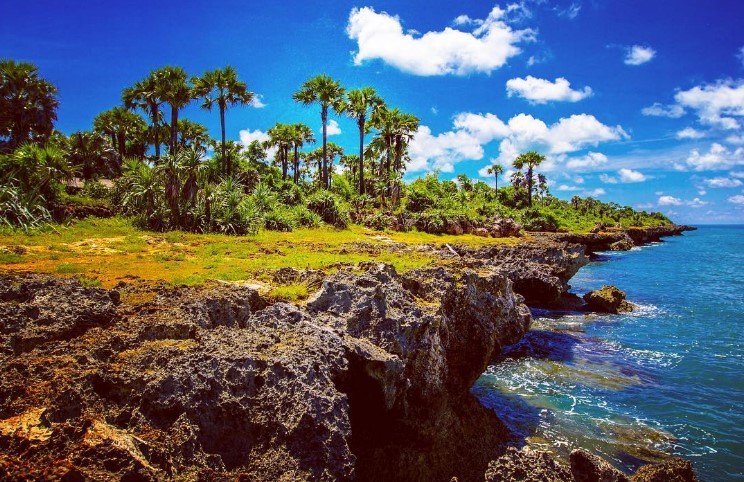
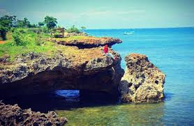
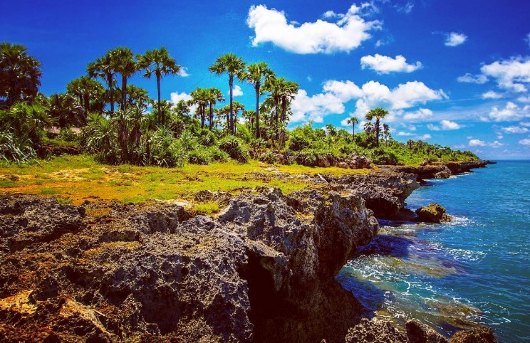
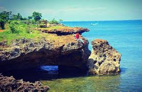

Gili Iyang sangat sesuai sebagai wisata untuk keluarga. Untuk mencapai ke Gili Iyang tidak perlu mengeluarkan budget yang dalam. Untuk menuju ke Gili Iyang, wisatawan menuju ke Pelabuhan Dungkek, Sumenep. Banyak mobil penumpang umum yang ada setiap saat dari kota Sumenep menuju Pelabuhan Dungkek. Tarifnya Rp 20.000. Tapi bila menggunakan kendaraan pribadi, baik roda dua maupun roda empat, pengunjung bisa menitipkannya di rumah warga tak jauh dari Pelabuhan Dungkek. Soal keamanan, terjamin. Warga Gili Iyang di Sumenep, Jatim, berusia hampir 100 tahun. Gili Iyang dikenal sebagai Pulau Awet Muda dengan kadar oksigen tertinggi kedua di dunia setelah Jordania yakni 21,5 persen. Di pelabuhan juga dekat dengan Mapolsek Dungkek. Dari pelabuhan Dungkek menuju Gili Iyang sudah banyak perahu motor milik nelayan yang menunggu kedatangan Anda. Tarif untuk reguler hanya Rp 15.000 per orang. Perahu reguler berangkat pada pukul 10.00 WIB. Bila datang bersama rombongan, pengunjung bisa menyewa perahu. Tarif perahu pulang-pergi Rp 500.000 dengan kapasitas perahu maksimal 30 orang. Tapi untuk rombongan kecil bisa menyewa perahu yang ukurannya lebih kecil, sekitar Rp 200.000.Tiba di Gili Iyang, Anda tinggal menyewa kendaraan di kawasan pelabuhan untuk menuju titik oksigen terbaik di Desa Bancamara.Bila pengunjung merasa punya banyak waktu untuk tinggal, maka pengunjung bisa bermalam di homestay yang menjadi satu dengan pemilik rumah.Salah satu homestay yang menjadi satu dengan rumah warga di Gili Iyang, Kabupaten Sumenep, Jawa Timur. Gili Iyang dikenal sebagai Pulau Awet Muda dengan kadar oksigen tertinggi kedua di dunia setelah Jordania yakni 21,5 persen. Pemilik rumah akan menyiapkan pula sarapan pagi, bila menginap. Namun untuk keperluan kuliner, warga juga sudah menyiapkannya, meskipun belum ada kuliner istimewa di desa tersebut. Selama berada di Gili Iyang, pengunjung bisa menuju sejumlah destinasi wisata lainnya, seperti ke goa di tepian pantai Gili Iyang. Ada sejumlah goa yang bisa dikunjungi wisatawan. Ada 7 goa di Desa Banra’as dan 3 goa di Desa Bancamara.
 


